Куратор раздела
Виндюков Евгений, Data Engineer
Если нужна помощь в обучении или в составлении резюме – пиши @halltape
Хочешь улучшить текущий раздел, внести недостающее или поправить формулировку? Предлагай PR и тегай @halltape
Что такое Spark?

Apache Spark - это супер быстрый фреймворк. Нужен он для того, чтобы обрабатывать большие данные на огромных кластерах (нескольких серверах). Работает он до 100 раз быстрее, чем Hadoop MapReduce в памяти или в 10 раз быстрее, чем на диске.
Визуально его код выглядит так, будто скрестили SQL и Python:
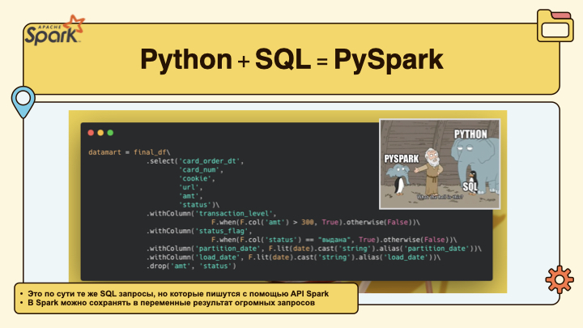
Откуда может читать данные Apache Spark
Файловые системы
- HDFS
- S3
- Локальная файловая система
- Azure Blob Storage, ADLS (Azure Data Lake Storage)
- Google Cloud Storage
Форматы файлов
- CSV
- JSON
- Parquet
- ORC
- Avro
- Text
Базы данных и хранилища (через коннекторы)
- JDBC (PostgreSQL, MySQL, MSSQL и другие базы)
- ClickHouse
- Greenplum
- Hive
- HBase
- Cassandra
- MongoDB
- Elasticsearch
Системы стриминга
- Kafka
- Kinesis (AWS)
Другие источники через коннекторы и плагины
- Delta Lake
- Iceberg
- Hudi
- Google BigQuery
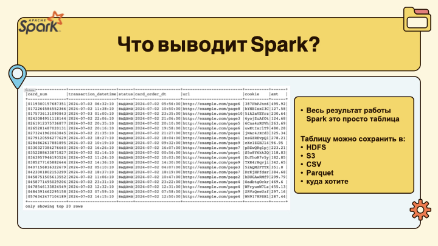
и так далее...
А в чем разница между Spark и Pandas?
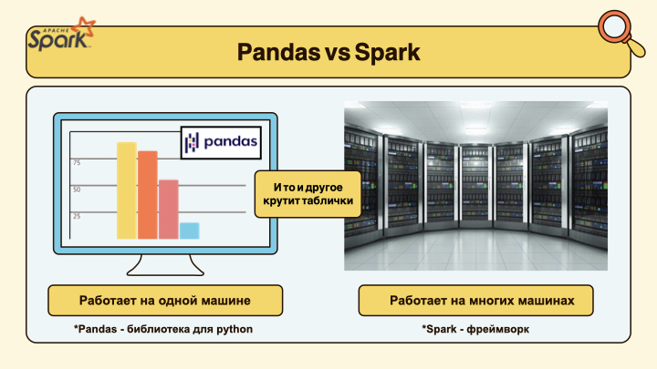
Внешне код на pandas и на spark действительно похожи. Но pandas работает на одной машине и иногда дата инженеры могут его использовать для обработки маленьких кусочков данных (например из API), когда данные помещаются в оперативную память одного компьютера.
Где запускается Spark?
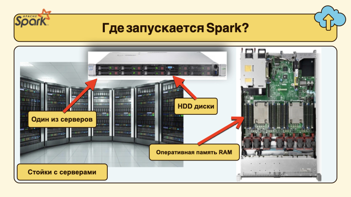
На работе под вашу команду будет выделено некоторое кол-во серверов. Собственно это физически может быть несколько стоек с серверами. Именно на них и будет запускаться ваш Spark. В бигтехах (больших компаниях, типа Банки) вы можете пользоваться коммунальным кластером. Это значит, что помимо вас, этими ресурсами будут пользоваться несколько команд. Соответственно здесь надо будет грамотно рассчитывать используемые ресурсы серверов, чтобы дать считать свои данные и другим. Подробнее про ресурсы будет пониже.
Из чего состоит Spark?
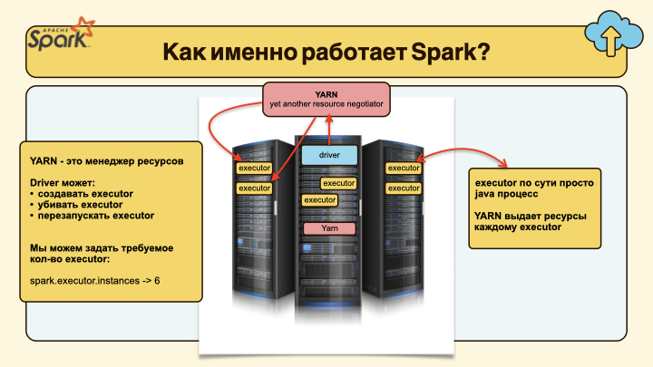
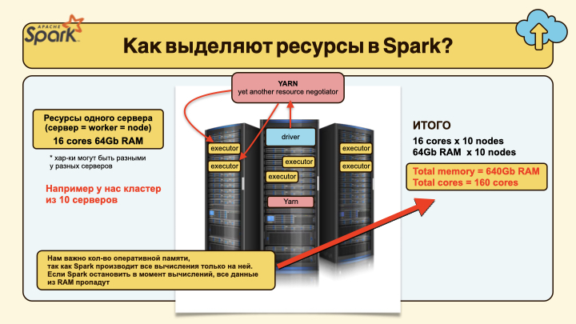
Если очень просто, то для того, чтобы посчитать сборку витрины данных, вам нужно будет запустить Spark приложение с конкретным кол-вом CPU и RAM. Эти значения вы указываете самостоятельно. Очевидно, что если вы укажите слишком много, то это может занять весь КЛАСТЕР. Таким образом вы отберете ресурсы от других пользователей. Поэтому в Spark нужно уже начинать думать об этом заранее.
Как Spark читает данные?
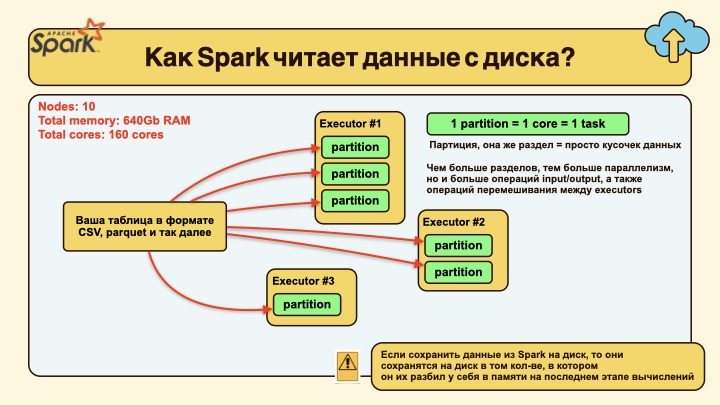
Spark можно очень гибко настраивать, но по умолчанию он часто читает файл и разбивает его на кусочки (типа на 128Мб). Этот параметр может меняться в зависимости от источника, настроек системы и так далее. Возьмем вариант в 128Mb.
Исходные данные: - Файл весом 10 Gb - 8 серверов (один сервер: 2 ядра CPU и 16Gb RAM)
В Spark: - 1 ядро (core) может выполнять 1 задачу (task) одновременно. - Установим каждому executor’у 2 ядра, тогда он может одновременно обрабатывать 2 tasks.
ВАЖНО!
Мы можем вручную указать кол-во executors и выделяемое им кол-во CPU и RAM. Совершенно необязательно, что на одном сервере будет запускаться один executor. Если хватает CPU и RAM для двух и более, то запуститься сразу несколько.
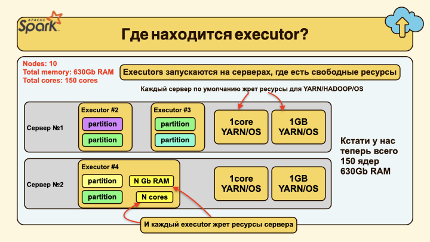
Если Spark читает файл размером 10Gb, значит он поделит его на
10 * 1024 Mb / 128 Mb = 80 partitions
Что получаем: - Кластер может одновременно обрабатывать 16 tasks (8 серверов по 2 tasks). - Поскольку партций 80, Spark сначала запустит 16 задач параллельно (на 8 executors). - Как только один task завершается, на освободившемся ядре сразу стартует следующий task. - И так, пока все 80 партций не будут обработаны.
Т.е. наш Spark уже при чтении разбил данные на небольшие кусочки и раскидал их по серверам, чтобы обработать их параллельно. Важный момент, что кол-во executors мы можем, как увеличить, так и уменьшить. Это позволяет напрямую влиять на скорость обработки данных.
Что такое Shuffle?

Shuffle происходит, когда Spark нужно перемешать данные между executor, например для выполнения операции JOIN и так далее. Представьте, что данные с одним и тем же ключем для join у вас лежат на разных executors. Очевидно, что нужно все перетасовать между собой. Более подробное объяснения можете почитать тут !
Сколько нужно выделять executors?
Ниже небольшое объяснение, почему слишком большое или слишком маленькое кол-во executors не всегда хорошо. На практике, особенно на junior позициях, вам не придется сильно заморачиваться с расчетом ресурсов. Ваш TeamLead выдаст вам готовый конфиг с уже настроенными параметрами. Ваша задача будет только запустить его. Но если вас спросят об этом на собесе – это будет огромным плюсом!
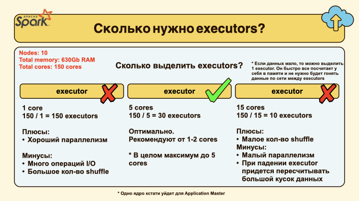
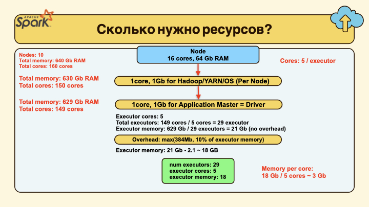
Ниже по ссылке можете посмотреть, как рассчитываются ресурсы для Spark приложения: - Онлайн расчет ресурсов для Spark
На что расходуется память в Spark?
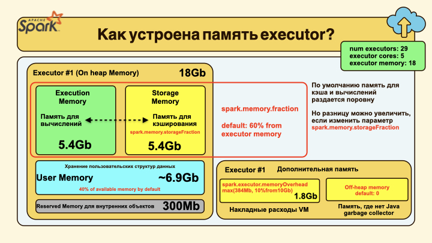
Эта информация скорее для Advanced уровня и о ней почти не спрашивают на собесах. Это понадобится вам только в том случае, когда вы начнете вручную настраивать кол-во выделяемых ресурсов для executor и увидите, что ваши Gb на самом деле пилятся внутри Spark еще на много чего полезного. Условно, будто вы купили диск на 1Gb, а в реальности там оказалось только 500Мб полезной нагрузки.
Есть ли у Spark UI?
Да, у Spark есть интерфейс, где можно отслеживать план выполнения вашего запроса. Это реально удобная вещь. Визуально это выглядит вот так:
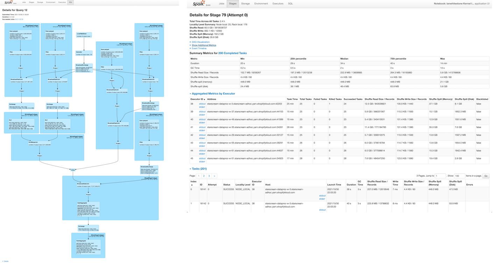
Для того, чтобы разобраться еще и в UI, ниже хорошая статья: - Как пользоваться Spark UI?
Где учить Spark?
Одна из хороших практик для обучения - переписывать запросы с SQL на Spark и наоборот. Результаты, очевидно, должны быть одинаковыми.
Вот пример двух одинаковых запросов на SQL и на PySpark
SELECT
d.department_name,
AVG(s.salary) AS average_salary
FROM employees e
JOIN departments d ON e.department_id = d.department_id
JOIN salaries s ON e.employee_id = s.employee_id
WHERE s.salary >= 3000
GROUP BY d.department_name
ORDER BY average_salary DESC;
result_df = (
employees_df
.join(departments_df, "department_id")
.join(salaries_df, "employee_id")
.filter(salaries_df.salary >= 3000)
.groupBy("department_name")
.agg(F.avg("salary").alias("average_salary"))
.orderBy(F.desc("average_salary"))
)
result_df.show()
Также рекомендую порешать несколько задачек отсюда:
Чтобы попробовать Spark локально, можно развернуть мини кластер у себя локально: